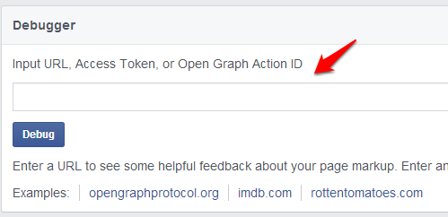
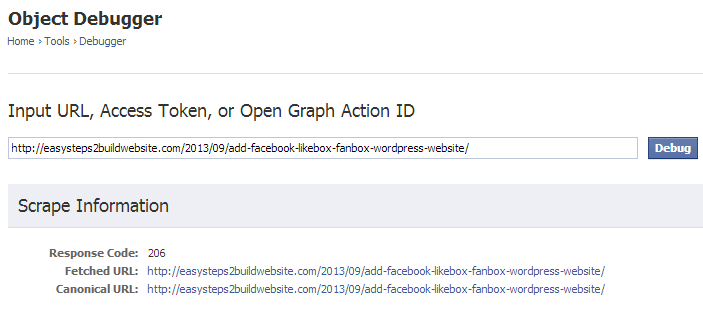
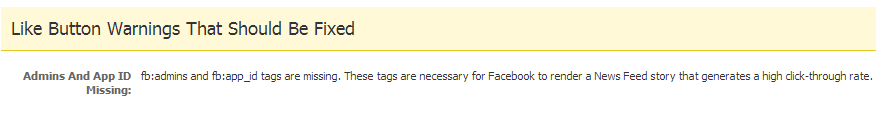
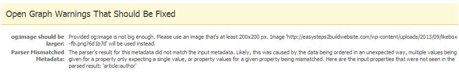
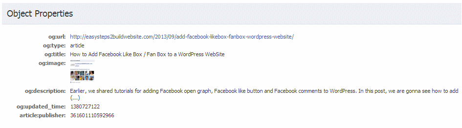
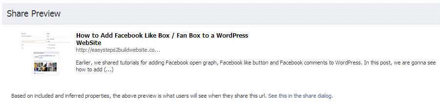
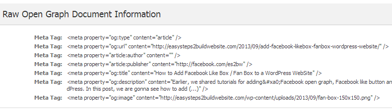

Few days back, we shared a post on how to insert facebook open graph in WordPress themes and in this post we are gonna show how to use Facebook open graph debugger tool effectively. If you have setup open graph meta tags in your themes and still not able to see the desired information in the Facebook share then it could be because the OG meta tags are not setup correctly. In such case this official Facebook can be very useful as it scans your content and provide you the suggestions and warnings to fix what went wrong.
First thing you need to do is to go to facebook open graph debugger, the screen would look like the below one, enter the url which you want to debug and click “Debug”.

Upon clicking “Debug”, you would be able to see how Facebook understand your content. It would provide you the list of tags and warning, which you can verify to see whether the open graph is showing correct information or not.

Like button warnings that should be fixed

Open graph warnings that should be fixed – These warnings not necessarily needs to be fixed. This is just to inform that what can be done to make the share more attractive, in order to gain good CTR and more page views.

Object Properties – The information here is basically fetched using Open Graph (OG) meta tags.

Share preview- This section shows how the content would look like when it would be shared on Facebook. This is section which you have to verify to see the output. whenever you fix any of the warnings in debugger tool, make sure to check the share preview to ensure the desired output.

Raw Open graph Document information – You can also see this info in the source code of the page/post. These tags are known as open graph meta tags. These meta tags gets added into the head section of your webpage once you enable them into your theme. These tags help Facebook to understand your content.

HELP – Please. I’ve tried using the debug tool and find it somewhat frustrating. It lists “Like Button Warnings” for missing items, like og.title. Then there are Open Graph Warnings with “extraneous Property” like for og.title. If I put a meta tag for og.title I seem to go in circles or get another message like: “trying to change an item and that’s not allowed”. I’d like a new title not the text from my 10 year old tap in the section. I have been on Facebook for a number of years and am trying to update to HTML5 and using og. tags etc.
PS In my opinion, I find the developers.facebook.com site about as useful as MS Help text. No real answers, no real search capacity, examples that only relate to their development sandbox, etc.